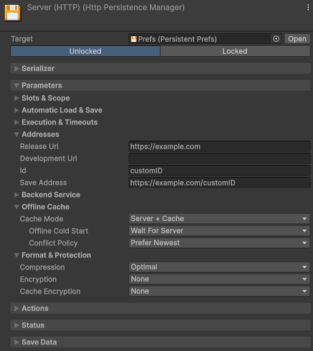

Cloud & remote
Remote saving is asynchronous
A remote load can't run synchronously, so a remote manager is not ready the moment its asset comes into scope, and it keeps retrying until that load lands. For more information, refer to When the data is ready.
Server (HTTP) and Cloud Save (UGS) can also persist through a local cache, which you pick with Cache Mode. A save then lands on the device first, which means it succeeds offline, and a background loop pushes it to the server.
With nothing cached and the server unreachable, Offline Cold Start decides what that first load does:
- Wait For Server keeps the load retrying until the server answers, so a reinstalled device restores its backup rather than starting over it. A brand-new player can't start offline.
- Start Fresh starts the player on the authored values, so a new player can play
offline straight away. The first load that does reach a server already holding a save settles it as an
ordinary conflict:
IMergeablefolds the offline progress into what the server holds, and without it the most recent save wins.
While the game runs, Status says whether everything has reached the server,
whether changes are waiting, or whether one is held. OnStatusChanged
fires on every change, and PushPendingChangesAsync() flushes what is waiting.
Resolve a conflict between two devices
The package never pushes a pending change over a save it hasn't seen, so a second device that played offline can't overwrite the first. It holds the change until the next load settles it.
Three things settle a conflict, and the first that applies wins:
IMergeablefolds both saves together.ConflictPolicy.Askasks the player.ConflictPolicy.PreferNewest, the default, takes the most recent save, which relies on the two devices' clocks.
Set Conflict Policy to Ask on the manager, then answer
Conflicts.OnAny with Conflicts.Resolve(manager, KeepLocal | KeepRemote). Both
saves arrive as SaveNodes with their save times, and the load stays undecided until you
answer.
GameObject > Persistent Asset > Conflict Prompt (IMGUI) is a ready-made
panel, which tells the two saves apart by the values you list in Preview Fields. It
doesn't stop the game around it, so hold your own UI off while IsAsking is true. A pad
cannot reach it: for a game played on a pad, use Conflict Prompt (uGUI) from the same
menu. It asks the same question on a canvas, in your UI's style, blocks the UI behind it, and is driven
by a PersistenceConflictListener.
Merge two saves
IMergeable folds the other device's save into
yours instead of discarding one of them. Merge reads the other side as a
SaveNode, applies what it wants from it, and returns whether it changed anything.
Merge must be commutative and idempotent.
The result can't depend on which device folds first, and folding the same save twice must change nothing.
A maximum or a set union is safe, while coins += otherCoins pays the player twice. Return
true only when you changed something, or two devices save back and forth forever.Server (HTTP)
Server (HTTP) saves to your own server, at url/slot/id. That address needs three routes:
GETreturns the stored body, and 404 when there is none.PUTstores the request body verbatim.DELETEremoves it.

Sign-in is your game's job. Set the credentials as soon as it returns:
HttpPersistenceManager.DefaultAuthorization = "Bearer " + token; // every HTTP manager
leaderboardManager.Authorization = "Bearer " + otherToken; // or just this oneA backend service wraps your data in a JSON envelope of its own, which the manager's Backend Service fields describe. For copy-ready values per service, refer to Connect to a backend service.
DefaultConfigureRequest when a
request needs other headers.Steam Cloud
Steam offers two ways to store a save, and the package supports both:
- Auto-Cloud needs no code and no plugin. Steam uploads the folders you name when the game exits and restores them on the next machine, so the game keeps its Local File manager.
- The Steam Cloud manager writes each save through Steam Remote Storage. It needs
Steamworks.NET and
SteamAPI.Init, and it can report the quota and list what the cloud holds.
To set up Auto-Cloud, point its rule in Steamworks at the folder a Local File manager writes to, and
add a path override per platform, taking each value from a real build's
Application.persistentDataPath:
| Steamworks field | Value |
|---|---|
| Root Path | WinAppDataLocalLow |
| Subdirectory | {CompanyName}/{ProductName}, from your Player Settings |
| Pattern | *.save, or the manager's File Extension |
| Recursive | On. The manager writes into a Save sub-folder, so with this off the rule matches nothing |
Steam syncs in the background and settles conflicts between machines itself, so the Steam Cloud manager needs no offline cache. With Steam Cloud switched off for the account or the application, saves stay on the machine. Outside Steam every operation fails, so route a DRM-free build to a Local File manager.
Cloud Save (UGS)
Cloud Save stores one key per save in the signed-in player's data, so Unity Services must be initialized and a player signed in before any persistent asset comes into scope.
Make the player id the slot, and set it while the old player is still signed in. The cache is keyed by manager and slot, which also stops one player's cached save reaching another on a shared device.